FitSphereVR
A virtual reality fitness app designed end-to-end as my university thesis project — from user survey to usability testing with a real VR headset.
Summary
This was the practical part of my thesis, "UX/UI Design for Virtual Reality Applications." Rather than design in the abstract, I built and tested a real product concept: FitSphereVR, a VR fitness app that lets people train — cardio, strength, yoga, pilates and more — from home, wearing a simple headset like a VR Shinecon or Quest.
The problem
VR fitness content already existed, but almost none of it had been validated with real people — most projects stopped at polished mockups, never tested against someone actually wearing a headset and trying to complete a workout unaided. Design decisions in VR are easy to get wrong in ways a flat screen mockup won't reveal.
prove a VR fitness app is genuinely usable — not just visually complete — before calling the design finished?
Research first
I ran a structured survey to understand what people actually wanted from a VR fitness product — preferences, workout habits, and pain points with existing tools. That data shaped everything downstream: two core user groups emerged (beginners and casual exercisers who needed guided, low-pressure routines; and fitness enthusiasts who wanted variety and challenge), which I translated into four detailed personas with their own goals and user stories.
From structure to screens
- Defined the information architecture around four pillars: Home, Exercises, Community, Profile — each mapped to a concrete user need rather than a generic app template
- Home surfaces weekly stats, trending workouts, monthly challenges and quick tips — so a user's first screen always answers "what should I do today?"
- Exercises organizes by category (cardio, strength, yoga, pilates, arms, legs, full body...) with instructional video libraries per category
- Community adds a friend activity feed, a leaderboard, and scheduled group classes — turning solo workouts into something social
- Profile aggregates lifetime stats, a calorie chart, earned medals, and favorited workouts
- Wireframed every flow before touching visual design, to validate structure and usability independent of aesthetics
Visual direction
A dark theme throughout — easier on the eyes in a headset, and visually calmer for something worn close to the face for extended periods — with a vivid green reserved for primary actions and progress, so it reads instantly against the near-black surface.
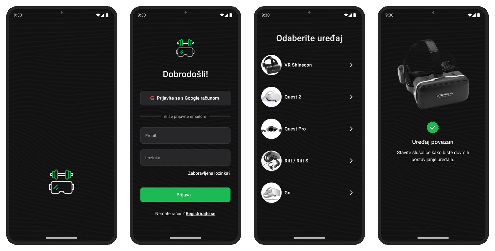
Onboarding flow
Account & profile setup
Alongside the VR pairing flow, the mobile app carries standard account management — editing personal details and adjusting privacy, notification, and data preferences — so the profile feeding into personas and progress tracking is something the user actually controls.
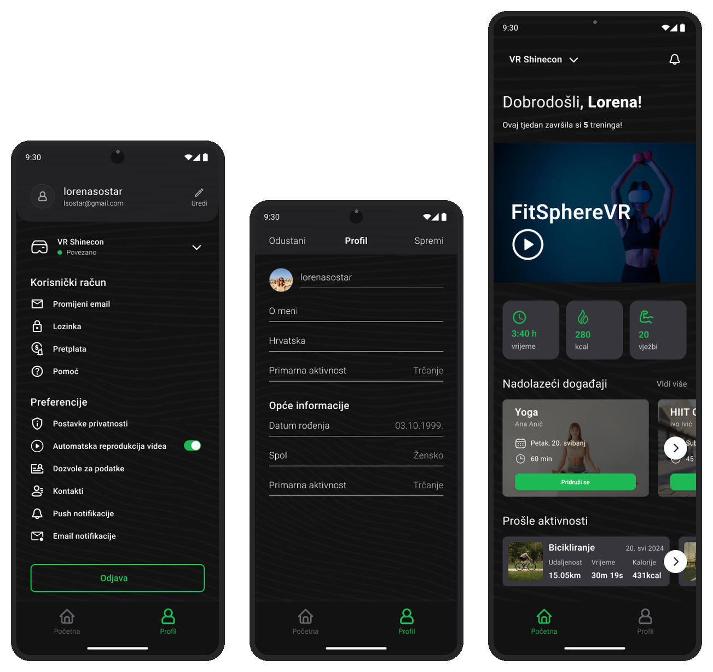
Account & profile
Try the live VR prototype
Open this on your phone, then place the phone inside a VR headset to view the experience in 3D:
app.draftxr.com/vr/dh1PJV →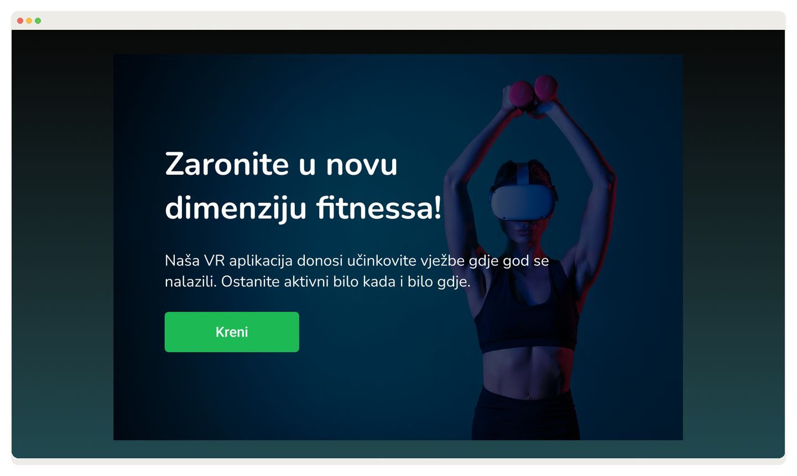
Landing page
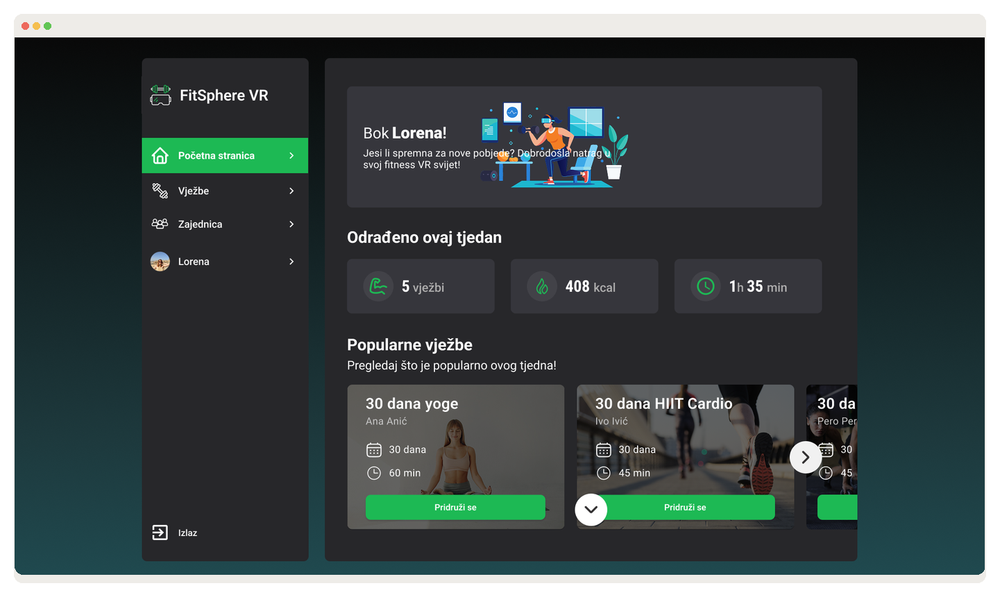
Popular workouts
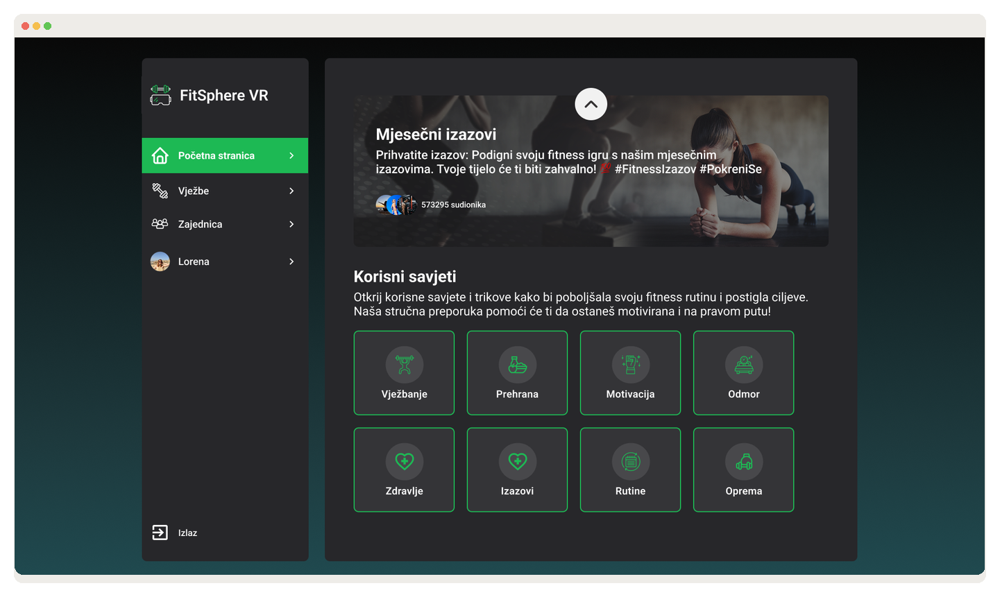
Challenges & tips
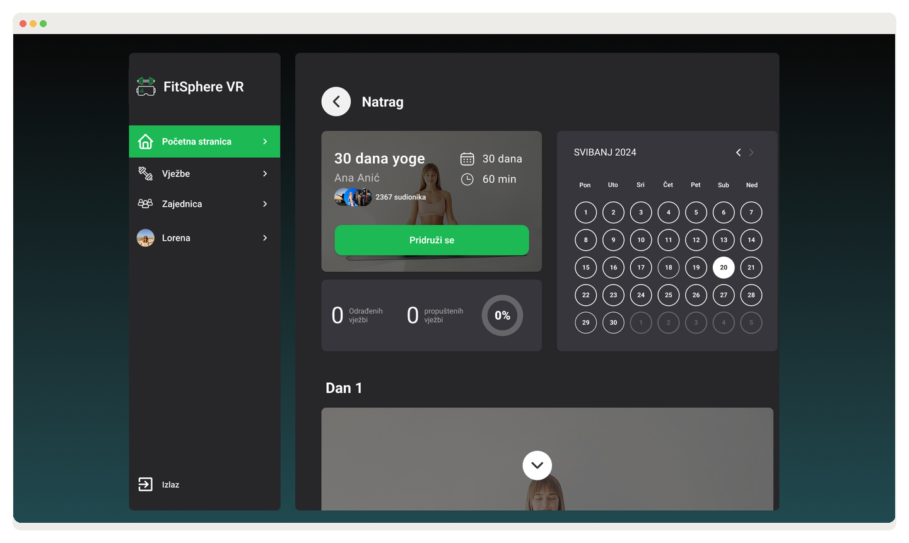
Program & calendar
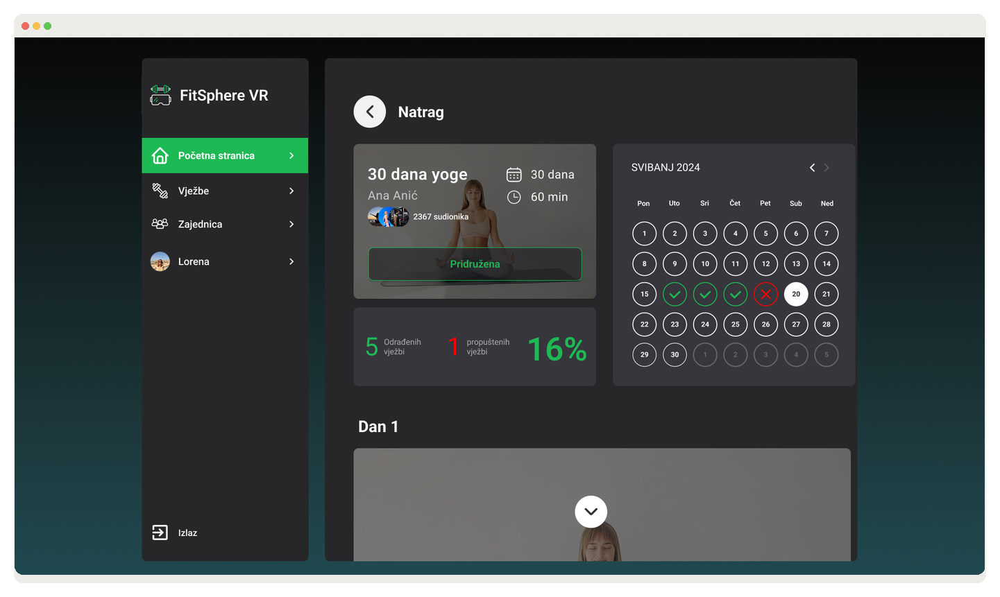
Daily progress
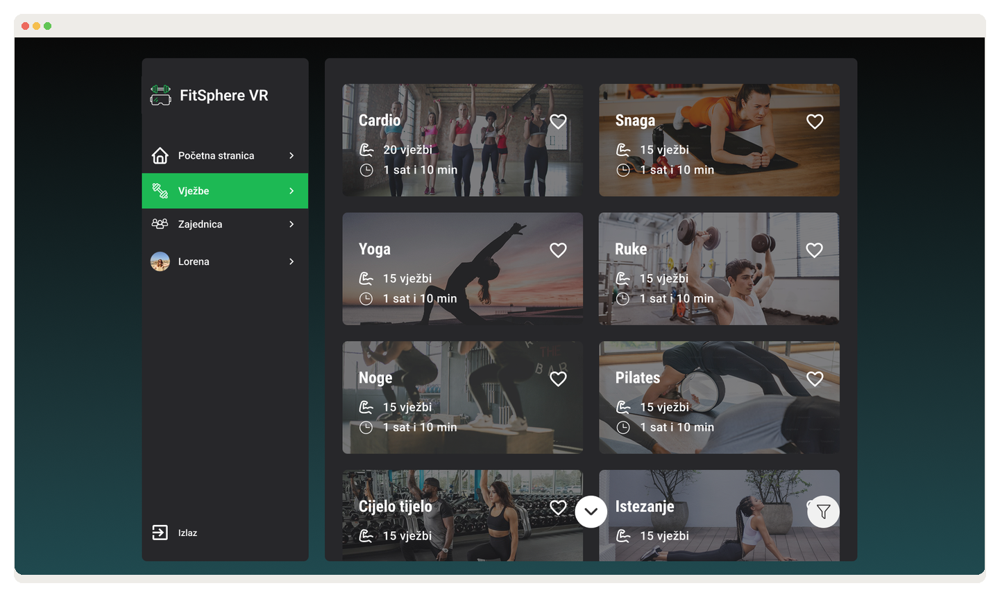
Exercise categories
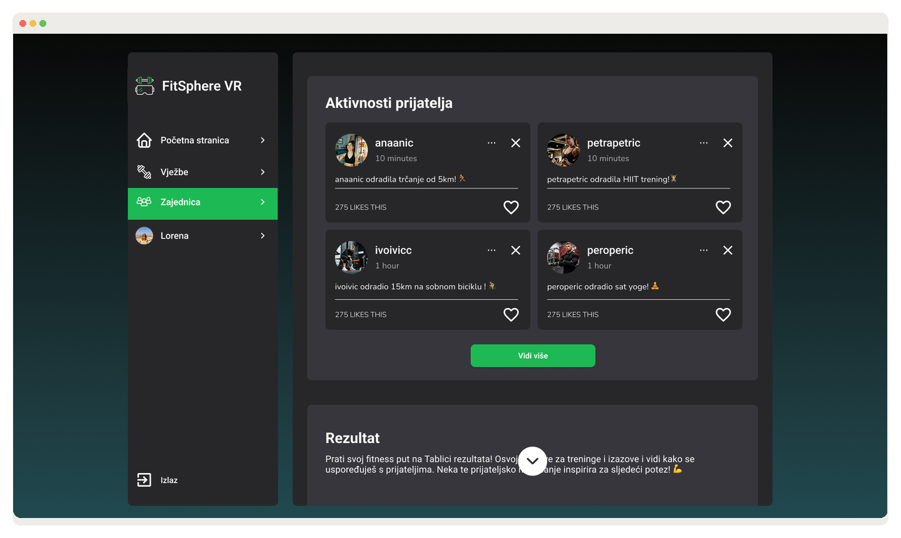
Friend activity feed
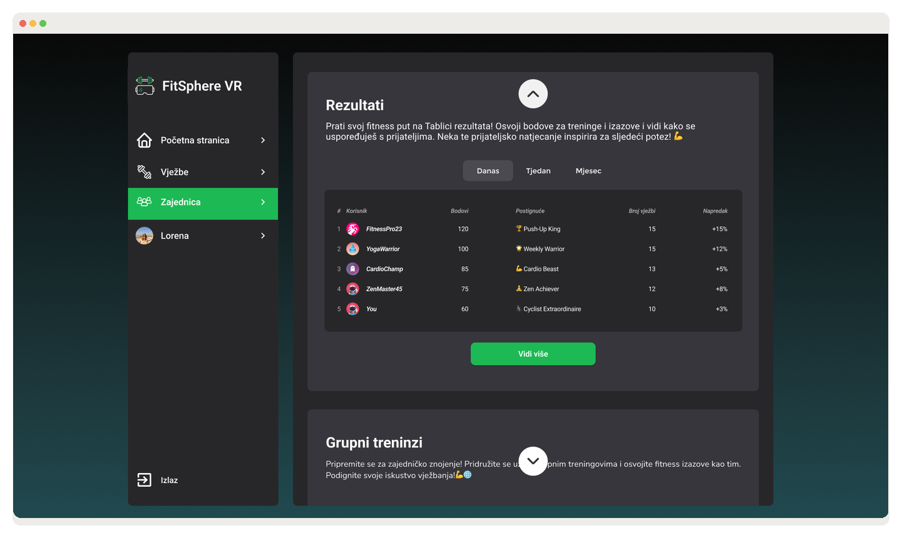
Leaderboard
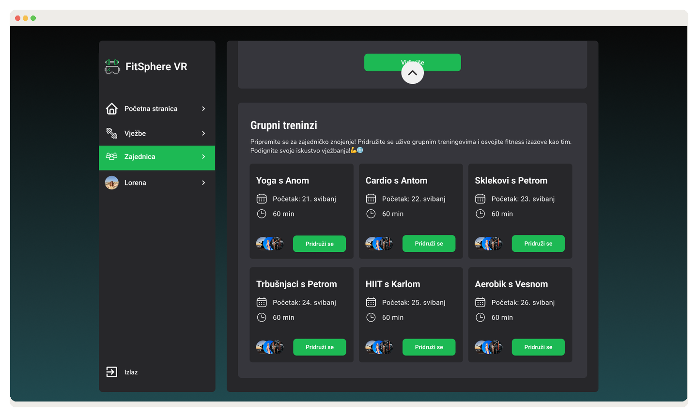
Group classes
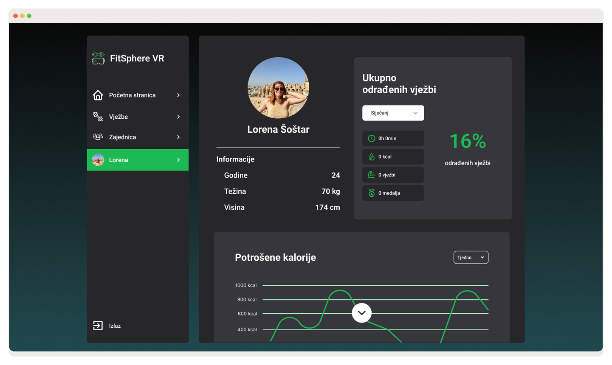
Profile
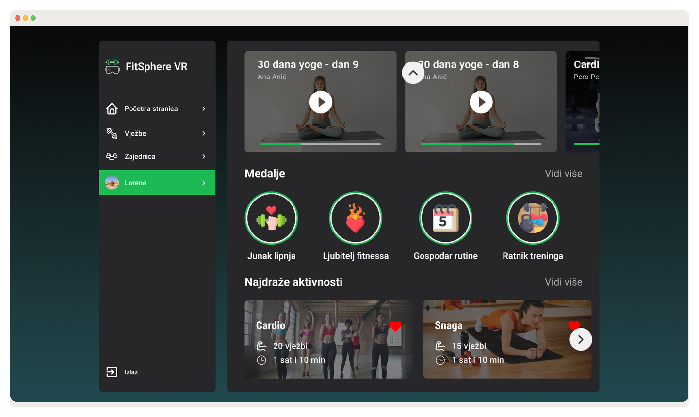
Medals & favorites
Usability testing — with the actual headset
I recruited five participants and put them through eleven task-based scenarios — from registering and logging in, to starting a cardio workout, finding a popular class, and tracking progress. Each session ran from my own home on a schedule, using a VR Shinecon headset: participants first walked through the mobile prototype, then put the phone into the headset to experience the flow in VR itself, with think-aloud interviews immediately after each task.
Across the eleven scenarios, every participant completed core tasks — registration, login, starting a workout, joining a popular class — on the first attempt, with no significant confusion. That result validated the information architecture and navigation decisions made much earlier, back at the wireframe stage.
Outcome
FitSphereVR became a full case study in taking UX seriously for an emerging medium: a product built on real survey data, shaped by personas and user stories, structured through deliberate information architecture, and validated with actual users in an actual headset — not just assumed to work because it looked right on a screen.